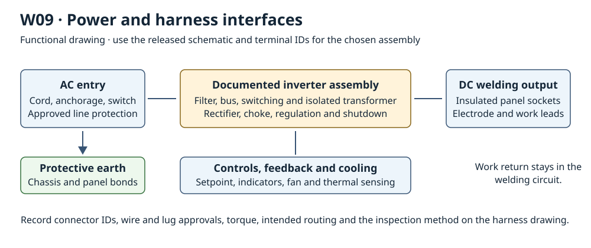
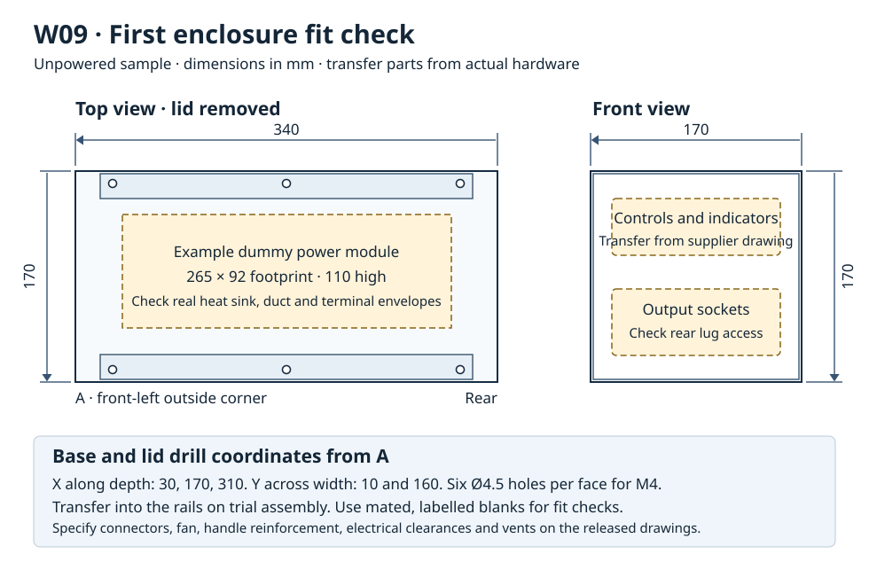

Build a shop-made DC stick welding set
Develop a 230 V inverter stick welder, build the steel case and harnesses by hand, and assemble a pilot unit for qualification.

Photo by Claudio Nardi (Klaudio). Original photograph · CC BY-SA 2.5.

Watch. Trace the input bridge, power conversion and output stage of the commercial inverter shown. Compare each block with the architecture selected for the shop build. Haseeb Electronics · Inverter welder functions and troubleshooting.
Follow the factory assembly. Identify where JASIC builds boards, integrates power assemblies, adds the case and tests the welder. Compare that sequence with the small-batch bench stations below. JASIC · Welding-machine factory tour · Rilon · Board assembly and inspection photographs.
Choose the first machine to sell
Use a single-phase 230 V, 50 Hz DC MMA inverter as the first design. Set a provisional maximum of 120 A and a 35% duty target at that current for indoor fabrication shops. Bring three real jobs to a welder and record rod type and size, material thickness, time under arc and the site's supply. Use that to set the continuous-current target and decide which electrode ranges you will claim. Keep MIG, TIG and outdoor ratings for later models.
At the conventional stick-welding load, use U2 = 20 + 0.04 × I2 for these design points. At 120 A the target is 24.8 V and 2.98 kW of output. With assumed 85% efficiency and true power factor of 0.90, input current during that load is about 16.9 A at 230 V and 19.5 A at an illustrative 200 V if both assumptions still hold. The on-load heat loss is about 525 W. These calculations set targets for supply, cooling and test equipment. Measure actual input, power factor, inrush and losses on the finished design before selecting the cord, plug and installation requirements. A ten-minute cycle at 35% represents 3.5 minutes on load and 6.5 minutes off load under the applicable test conditions. STMicroelectronics · Conventional MMA load calculation · Fronius · Commercial nameplate and duty cycle.
| Training design point | Conventional load | Output power |
|---|---|---|
| 60 A | 22.4 V | 1.34 kW |
| 85 A | 23.4 V | 1.99 kW |
| 120 A | 24.8 V | 2.98 kW |
Buy and quote one pilot in India
Use the retail snapshots from 22 November 2026 to price a small order. Put every quotation, supplier drawing and revision in the build folder. Confirm freight, GST, stocking and minimum order before placing a purchase. Get the module sample and its mating hardware before cutting the product panels.
| Qty | Part or work | Source, price and incoming check |
|---|---|---|
| 1 set | 230 V inverter assembly and matched hardware View board assembly | Quote a documented 120 A sample at 24.8 V conventional load and the 35% duty target, with matched heat sinks, transformer, choke, controller, fan, and interface drawings. Sunrise Mek Welders · Ludhiana manufacturer contact. Ask whether they supply integration assemblies and engineering data. Availability and price for this assembly need a written quote. |
| 2 + 2 | Insulated panel sockets and matching plugs View socket | Candidate matched Mini system for 25 mm² leads: DINSE DIX BEM 25 socket 121300020 and DIX SKM 25 plug 122100020. Get the same mating interface for both outputs, with the correct sleeve and rear hardware. Verify duty rating, lug access and panel thickness. Request Indian pricing from Rajyog Enterprises · Pune connector dealer using exact part numbers and asking for both halves. DINSE · Current ranges and cutouts · Kewell · Socket photo. |
| 5 m | 25 mm² flexible copper welding cable View cable | Budget for one 5 m roll with roughly 3 m for the holder and 2 m for the work lead, allowing for end preparation. Confirm that the roll, holder and clamp can accept this conductor and that cable temperature and voltage drop meet the released limits. Techno Tronics 5 m · ₹1,469, Moglix · Usha Electricals · Polycab alternative. |
| 1 each | Insulated electrode holder and work-return clamp View holder View clamp | Price references are Ador King Cool 600 S12.06.001.0201 and work-return clamp S12.06.001.0203. Confirm the approved 25 mm² terminal arrangement and test contact heating at the intended load. Ask for a matched, assembled lead if the supplier cannot document how the cable terminates. Holder · about ₹830, Moglix · Clamp · about ₹290, Moglix. |
| 1 set | Case, rails and mechanical hardware View fit drawing | Quote one 550 × 700 mm offcut of 1.2 mm cold-rolled low-carbon steel for the six blanks, 1.8 m of 20 × 20 × 2 mm steel angle, 48 M4 × 10 screws with flat washers and captive or prevailing-torque nuts, and four feet for the mechanical sample. Check actual sheet gauge and ask separately for shearing, deburring, holes and coating. Mahesh Iron Traders · Example Ludhiana steel quote source. |
| 1 set | Power entry, internal harness and barriers View interface map | Get the released BOM for the cord and plug, mains switch, protection, fan guards, bonding hardware, terminals, internal conductors, insulating barriers and strain relief. Ask the harness supplier to price one assembly from that build print with crimp and inspection evidence. Select the input parts against measured maximum and effective input currents, inrush and the specified installation. |


The cable, holder and clamp examples total about ₹2,589 before shipping. Keep this subtotal separate from the inverter, output connectors, sheet work, labour and qualification. Price the whole unit after getting those quotes.
Send with the module RFQ. Specify one sample and a separate quote for ten units. Request maximum and effective input current, input range, 60/85/120 A load data, duty at the qualification ambient, open-circuit voltage, fault behaviour, drawing revision, hole pattern, installed airflow, protective-earthing and insulation interfaces, supported supply connection, unit price, GST, freight, lead time and spare-part terms. Request the evidence for any claimed standard.
Design the power source and choose what to make in-house
Plan the chain from mains entry and protection through EMI filtering, rectification, inrush control and the DC bus. An IGBT bridge and isolated gate drivers switch the high-frequency transformer. On the secondary, fast rectifiers and an output choke feed the electrode and work-return sockets. A current sensor closes the regulation loop. Auxiliary supplies, temperature sensors and hardware overcurrent shutdown support the controller. STMicroelectronics · Welding inverter architectures · T21 · Converters and control.
| Assembly | First-unit decision and evidence |
|---|---|
| Power electronics | For a first pilot, source a documented 230 V OEM inverter assembly including matched magnetics and controller, or have your power-electronics engineer release your own PCB and transformer design. Obtain the interface drawing, terminal assignments, output curves, airflow and sensor requirements, approved parts list and change-control terms. |
| Own inverter design | Start with bridge topology, bus operating range and surge cases. Specify transformer volt-seconds, saturation margin and insulation system, switch and diode losses, output choke ripple, short-circuit protection and current-loop stability. Verify each stage on an isolated development rig before releasing transformer winding drawings, PCB layout, firmware and calibration instructions. |
| Case and harnesses | Make the chassis, covers, handles, air baffles and labelled harnesses from your own drawings. Buy the rated cord set, switch, output sockets, fan and insulating barriers to the approved BOM. Keep welding return separate from protective earth according to the approved design. |
| Setpoints and ratings | Prove the stable current range, open-circuit voltage and any voltage-reduction function, short-circuit response and thermal trip behaviour. Set the EMC classification and duty curve before drafting the final rating plate. |

Work the inverter calculations before ordering a board
Study the two-switch forward topology in ST's UM0933. Figure 3 shows the power circuit and Figure 4 the analogue controller. AN4638 gives component stress equations and measured results from two larger single-phase inverter platforms. Use those schematics to trace where feedback and hardware faults enter the controller and where energy returns to the bus during transformer reset. Compare those paths with the bridge topology before choosing a PCB design. STMicroelectronics · Evaluation board schematics · STMicroelectronics · Forward-converter stress and test data.
- Set the bus envelope. For a capacitor-input rectifier without boost PFC, 230 V RMS has a theoretical peak near 325 V. At 253 V RMS the peak is about 358 V. Account for ripple, sag, surges and measured switching overshoot when selecting the bus components and semiconductor voltage margins.
- Estimate duty and magnetics. In an ideal continuous-current forward converter, output voltage is approximately bus voltage × secondary-to-primary ratio × switching duty. At an illustrative 250 V bus trough and a 1:4 turns ratio, 24.8 V requires about 40% switching duty before losses. Check the real duty requirement at low line against transformer reset. Use worst-case primary voltage and on-time to check core flux, and use choke voltage and on-time to estimate ripple. Switching duty at the transformer is a separate quantity from the ten-minute welding duty rating.
- Prove the control and failure response. On a low-voltage development fixture, inject commanded current and sensor signals. Confirm drive is inhibited during startup, excessive primary current, missing feedback and thermal trips. Record the bounded hot-start or anti-stick behaviour if included. Use the reviewed prototype procedure to check gate timing, current ramp, transformer reset, switching overshoot and temperatures at the real load.
Release the schematic, approved BOM, transformer construction and insulation drawing, PCB files, firmware or controller settings, test limits and enclosure drawing as one revision. The worked values are estimates for engineering review and depend on the actual parts and layout.
Build the first unit by hand
Build an unpowered sample using actual parts or mechanical dummies. The fit example is a 340 × 170 × 170 mm outside envelope. The mechanical drawing is a worked starting point whose dimensions must be revised after getting the actual module. The powered pilot requires released drawings for thermal, insulation and mechanical performance. The example enclosure has no physical build or operating test result.


Tool photo sources. Sheet brake · Tawny Kruse, U.S. Army National Guard, public domain · Drill press · Plbcr, CC BY-SA 3.0 · Caliper · Jacek Halicki, CC BY-SA 4.0 · Lug crimper · Klauke distributor.
.jpg){kind=link}


See how the brake clamps and bends. Watch the operator set the fingers and lift the leaf. Check flange dimensions on a test coupon from your own batch. The large brake shown has a different capacity from a bench brake. Grizzly Industrial · Pan and box brake demonstration · Grizzly · Finger placement and bending instructions.
| Piece | Qty | Fit-check cut size in mm | Bench operation |
|---|---|---|---|
| Base and removable lid | 1 each | 340 × 170 × 1.2 | Mark the same datum on both blanks. Drill six Ø4.5 case assembly holes on each face using the drawing. |
| Long sides | 2 | 340 × 167.6 × 1.2 | Fit between lid and base. Tie to the rails and corner angles with holes transferred after clamping. |
| Front and rear | 1 each | 167.6 × 167.6 × 1.2 nominal | File to a slip fit between sides before coating. Transfer dummy control, socket and cord-entry locations after fitting. Keep separate replaceable blanks for the final cutouts. |
| Rails and corner posts | 4 each | 300 and 135 long, 20 × 20 × 2 angle | Keep the long rails 20 mm in from each end. Deburr and clamp the corner angles around them. Drill matching holes during the fit check. |

- Lay out the case. Put input entry and protective earth near the rear. Place the electrode and work-return sockets on the front. Lay out the mains/bus and isolated areas with barriers and routing that maintain the design's clearance and creepage after assembly and servicing. Allow room for tools, cable bends and wall clearance at openings. Make a cardboard mock-up and lay actual components against it.
- Make the steel parts. Scribe blanks on the sheet and shear with the marked datum intact. Remove burrs, then clamp base, sides and end panels around the rails on a flat bench. Pilot-drill and open to the specified final diameter. Aim for a difference of no more than 1 mm between base diagonals on the mock-up. Measure both before transferring lid holes. Check that the lid removes and refits without forcing the screws. For a bent production cover, use the coupon to set the bend allowance.
- Build and inspect harnesses. Use the released wire lengths, gauges, terminals, insulation and crimp tools. Build on a pegboard, label the ends and check continuity and pin assignments against the drawing. Record crimp and pull-test evidence as specified. Keep mains leads, gate/sense leads and welding output conductors in their approved routes.
- Assemble and close. With power removed, fit the approved module, connectors, earth bond, fan, barriers and controls using the specified torque and hardware. Keep lids, screws and wiring away from charged or hot parts and the fan. Check that the production lid, guards, vents and baffles are installed before any powered test.
- Inspect the build against the drawing. Have a second person check conductor routing, connector locks, earth bonds, insulation barriers, socket polarity, strain relief and clearances. Sign the build record before moving the unit to the qualified test bench. The test technician owns first power, stored-energy isolation and the guarded load stand.
Transfer the approved hole pattern to a drill jig and make a harness board after the first fit check. Keep the first accepted assembly as a reference. Log the revision and labour minutes at chassis, harness, assembly and test stations so the next units expose variation in the process.
W11 · Make, terminate and test both welding leads W10 · Load-test, qualify and release the pilot batch for sale